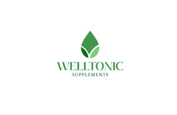

Trade Mark Journal No.2025/042 17 October 2025
UK00004273436 3 October 2025 (5)

- Class 5
- Dietary and nutritional supplements for human consumption; Food supplements; vitamin and mineral supplements and preparations; Multivitamin and multimineral preparations; Protein dietary supplements; protein powders for use as food supplements; Amino acid supplements; branched-chain amino acid (BCAA) supplements; creatine supplements; L-glutamine supplements; Collagen dietary supplements; Probiotic supplements; prebiotic supplements; synbiotic supplements; Digestive enzyme preparations for dietary supplementation; Herbal and botanical extracts for use as dietary supplements; adaptogenic supplements; mushroom extract supplements for dietary use; Omega-3 fatty acid supplements; fish oil, krill oil, flaxseed oil and MCT oil dietary supplements; Antioxidant supplements; Electrolyte replacement preparations; dietary supplement drink mixes; effervescent tablets for dietary supplementation; Vitamin gummies as dietary supplements; chewable dietary supplements; liquid dietary supplements; powdered dietary supplements; capsules and tablets for dietary supplementation; Dietetic preparations and foods adapted for medical use; meal-replacement powders and drinks for medical purposes; nutritionally fortified beverages for medical purposes; Mineral salts for medical purposes for rehydration; All of the foregoing relating to human health, wellness and sports nutrition; Vitamin supplements; Nutritional supplements; Dietary supplements; Probiotic supplements; Herbal supplements; Homeopathic supplements; Flaxseed dietary supplements; Calcium supplements; Chlorella dietary supplements; Anti-oxidant supplements; Colostrum supplements; Protein supplements; Dietary supplements consisting of vitamins; Prebiotic supplements; Lecithin dietary supplements; Food supplements; Mineral dietary supplements; Zinc dietary supplements; Mineral nutritional supplements; Propolis dietary supplements; Acai powder dietary supplements; Nutraceuticals for use as a dietary supplement; Liquid dietary supplements; Dietary and nutritional supplements; Vitamin supplements for animals; Vitamin and mineral supplements; Protein dietary supplements; Linseed dietary supplements; Liquid nutritional supplements; Yeast dietary supplements; Liquid vitamin supplements; Casein dietary supplements; Enzyme dietary supplements; Dietary supplements for animals; Dietary supplements for pets; Anti-oxidant food supplements; Dietary food supplements; Alginate dietary supplements; Albumin dietary supplements; Liquid herbal supplements; Flaxseed oil dietary supplements; Wheat dietary supplements; Vitamin and mineral supplements for pets; Dietary supplements for humans; Dietary supplements for infants; Pollen dietary supplements; Energy gels (dietary supplements); Glucose dietary supplements; Vitamin and mineral food supplements; Protein powder dietary supplements; Dietary supplements in powder form; Mineral dietary supplements for animals; Dietary supplements with a cosmetic effect; Nutritional supplements for veterinary use; Dietary supplements for medical use; Medicated food supplements; Mineral dietary supplements for humans; Whey protein dietary supplements; Food supplements for sportsmen; Nutritional supplements consisting primarily of magnesium; Protein supplements for animals; Dietary supplements consisting primarily of magnesium; Vitamin supplement patches; Soy protein dietary supplements; Health-aid foods supplements containing ginseng; Health food supplements made principally of vitamins; Vitamin preparations in the nature of food supplements; Dietary supplement drinks; Soy isoflavone dietary supplements; Dietary supplements and dietetic preparations; Linseed oil dietary supplements; Nutritional supplements consisting of fungal extracts; Nutritional supplements consisting primarily of calcium; Brewer's yeast dietary supplements; Folic acid dietary supplements; Calcium tablets as a food supplement; Dietary supplements consisting primarily of calcium; Nutritional supplements consisting primarily of zinc; Dietary supplements for controlling cholesterol; Nutritional supplements for livestock feed; Nutritional supplements consisting primarily of iron; Herbal dietary supplements for persons special dietary requirements; Food supplements for veterinary use; Dietary supplements and dietetic preparations containing CBD oil; Dietary supplements consisting primarily of iron; Food supplements for dietetic use; Nutritional supplement energy bars; Dietary supplements promoting fitness and endurance; Multivitamins; Dietary supplement drink mixes; Medicated supplements for animal feedstuffs; Dietary food supplements used for modified fasting; Health food supplements made principally of minerals; Feed supplements for veterinary use; Mineral supplements for feeding livestock; Food supplements for medical purposes; Medicated supplements for foodstuffs for animals; Ganoderma lucidum spore powder dietary supplements; Activated charcoal dietary supplements; Zinc supplement lozenges; Fitness and endurance supplements; Food supplements for non-medical purposes; Food supplements in liquid form; Natural dietary supplements for treating claustrophobia; Protein supplement shakes; Wheat germ dietary supplements; Dietary supplements for pets in the nature of a powdered drink mix; Vitamin supplements for use in renal dialysis; Royal jelly dietary supplements; Ground flaxseed fiber for use as a dietary supplement; Antibiotic food supplements for animals; Pine pollen dietary supplements; Diet capsules; Health food supplements for persons with special dietary requirements; Dietary supplements for humans not for medical purposes; Food supplements consisting of amino acids; Nutritional supplement meal replacement bars for boosting energy; Powdered nutritional supplement drink mix; Dietary supplements for human beings; Fodder supplements for veterinary purposes; Vitamins and vitamin preparations; Dietary pet supplements in the form of pet treats; Preparations for supplementing the body with essential vitamins and microelements; Health-aid foods supplement containing red ginseng; Capsules for medicines; Multi-vitamin preparations; Nutritional supplements made of starch adapted for medical use; Food supplements consisting of trace elements; Powdered nutritional supplement energy drink mix; Powdered fruit-flavored dietary supplement drink mix; Delivery agents in the form of coatings for tablets that facilitate the delivery of nutritional supplements; Preparations of vitamins; Antioxidant pills; Dietary supplemental drinks; Multivitamin preparations; Strengthening supplements containing parapharmaceutical preparations for prophylactic purposes and for convalescents; Organotherapeutic drugs; Dietary supplements for human beings and animals; Corn rings for the feet.
Dr Christopher Ejeh